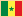
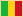
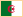
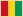
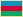

THE ETHNO TRIP
 Youssou n'Dour, Orchestra Baobab
 Ali Farka Toure, Oumou Sangare, Salif Keita, Boubacar 'Kar Kar' Traore,
Toumani Diabate, Rokia Traore
 (Cheb) Khaled
Lee 'Scratch' Perry
Mari Boine (Persen)
Cesaria Evora
Buena Vista Social Club
Дживан Гаспарян
Inti-Illimani
Geoffrey Oryema
Miriam Makeba
Papa Wemba, Jean 'Bosco' Mwenda
Тувинское горловое пение, Сергей Старостин
Marta Sebestyen/Muzsikas
 Mory Kante, Diaou Kouyate, Sona Diabate
Susana Baca, Lucila Campos
Mahmoud Ahmed, Kassa Tessema
Традиционная музыка Японии
Thomas Mapfumo
 Алим Касимов
Традиционная музыка Узбекистана
Традиционная музыка Вьетнама
ЭТНО-СТИЛИ И ИНСТРУМЕНТЫ |
|